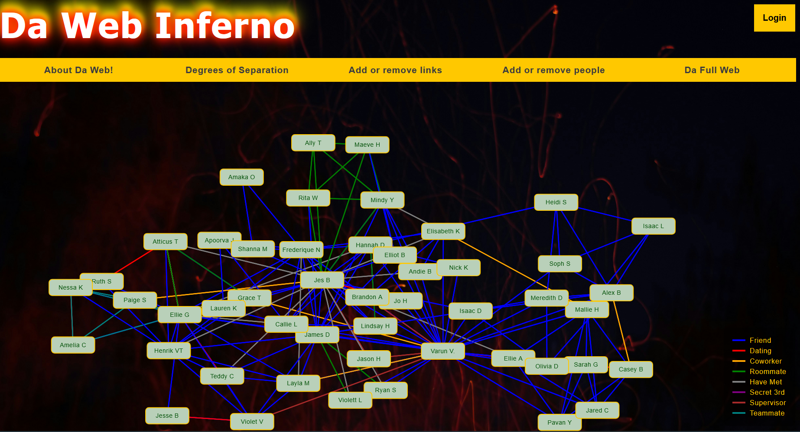
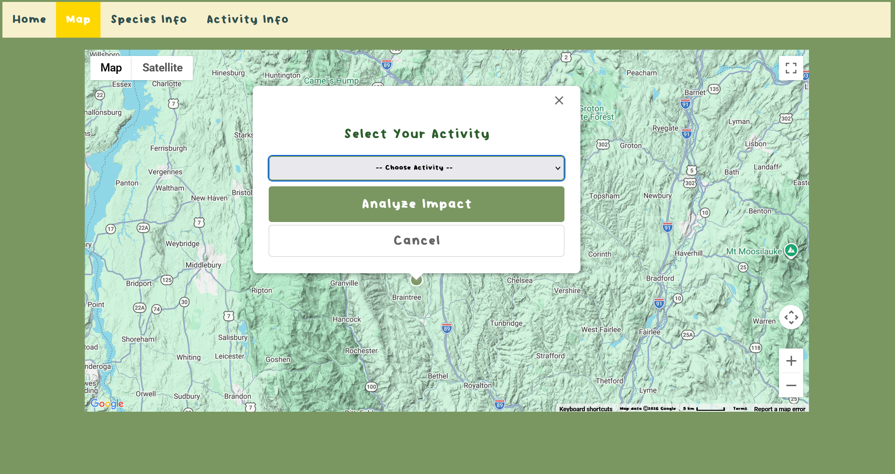

Da Web
The web is a brand new way to map out the social sphere at UVM!
Inherent to a college campus is that people are interconnected in ways you would not expect. Your chemistry lab partner may be on an intramural sports team with your roommate. Your classmate might have met your best friend at an ice-cream social.
Da Web is your vehicle to map out and visualize the connections that occur between us in a fun, accessible, and interactive way. Find connections between people you didn't know existed, use the Degrees of Separation tab to find a path between two unlikely people, and more!


Sustainable Development
A tool to help you find fun outdoor activities to do with minimal environmental impact
